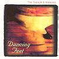

Celtic Lyrics Corner > Artists & Groups > Tannahill Weavers > Dancing Feet > Wild Mountain Thyme
|  | Wild Mountain Thyme |
| Credits : | Francis McPeake |
| Appears On : | Dancing Feet |
| Language : | Scots-English |
| Other Versions : | " Will Ye Go Lassie, Go? " on The High Kings soundtrack |
Lyrics :
The summer time is come
And the trees are sweetly bloomin'
And the wild mountain thyme
Grows amang the bloomin' heather
Will ye go, lassie, go?
Chorus
:
And we'll all go together
To pull wild mountain thyme
All around the bloomin' heather
Will ye go, lassie, go?
I will build my love a bower
By yon clear crystal fountain
And on it I will pile
A' the flooers o' the mountain
Will ye go, lassie, go?
(Chorus)
If my true love, she were gone
I would surely find another
Where the wild mountain thyme
Grows amang the bloomin' heather
Will ye go, lassie, go?
(Chorus 2x)